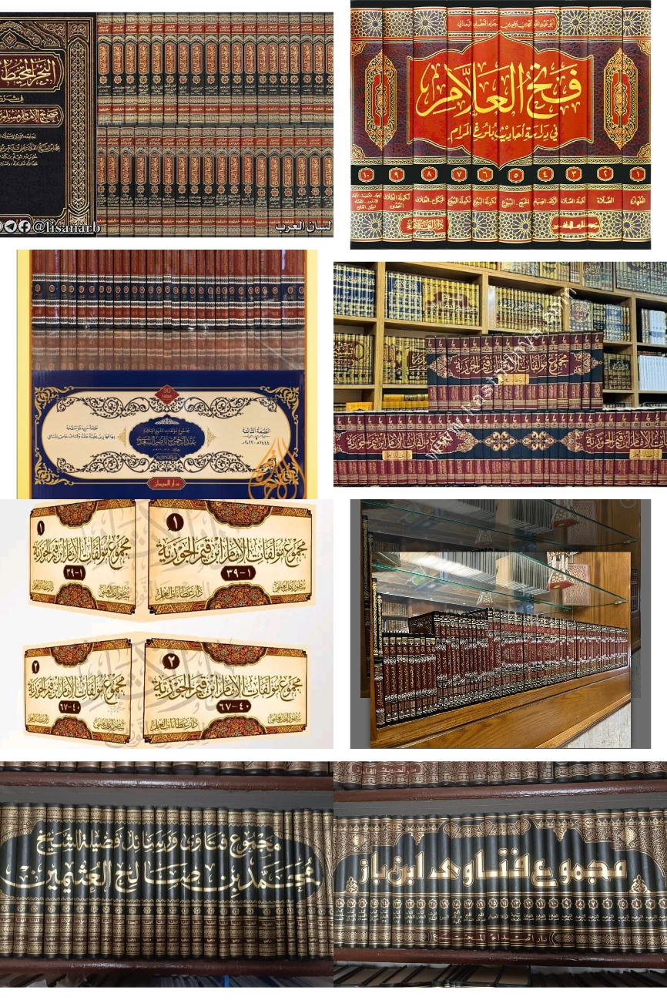
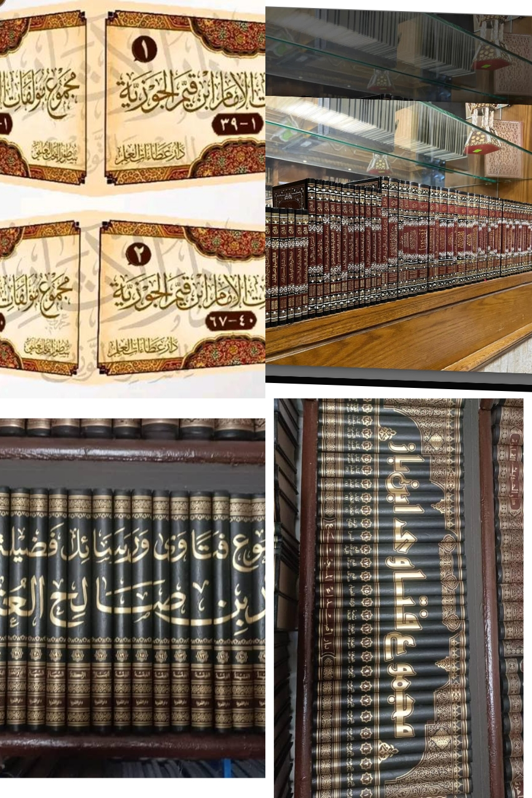

I have acquired practical skills in the production and binding of Arabic books. My responsibilities include collecting and arranging pages, stapling books, and applying gum during the binding process. Through this experience, I have developed attention to detail, patience, and the ability to work efficiently.
Since 2021, I have been involved in community teaching activities. This experience has helped me develop communication, leadership, and mentoring skills while assisting students in their learning process.

I am also involved in the sale and distribution of Arabic books. This activity has improved my customer service, record-keeping, and business management skills.